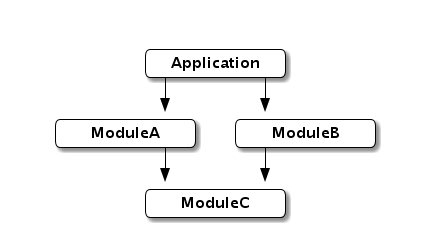

A module provide services based on a configuration which can be overrided by the module container.
Let’s take a look at this simple modularization use case (arrows indicate “depends on”):
When designing application with an IoC container, you want to avoid coupling as much as possible. For instance, ModuleC could be self-contained in a jar file and he doesn’t need other modules to be used.
Let’s start with simple definition for ModuleC:
final class ModuleC(override val ctx: Context) extends Module {
override val bindings: Bindings =
bind[ServiceC] to new DefaultServiceC
val service = inject[ServiceC]
}
trait ServiceC
class DefaultServiceC extends ServiceC
class AdvancedServiceC extends ServiceC
As you can see, defining a module is basically creating a class extending Module. You must add a constructror parameter of type Context that override ctx value in order to allow correct embedding of your module into other contexts.
You can then define your binding(s) and expose your service(s) using val/def, depending if you want to expose your service as a singleton or not.
It’s not mandatory but highly recommended to define your module as final. You should always prefer composition over inheritance when designing modules.
That’s it! You created your first module, and low let’s see how we can consume it in ModuleB:
final class ModuleB(override val ctx: Context) extends Module {
override lazy val modules = new ModuleC(this) :: Nil
override val bindings: Bindings =
bind[ServiceB] to autowire[DefaultServiceB]
// Without autowiring:
//bind[ServiceB] to new DefaultServiceB(from[ModuleC].service)
val service = inject[ServiceB]
}
trait ServiceB { val c: ServiceC }
class DefaultServiceB(override val c: ServiceC) extends ServiceB
To import a module into an existant module/context, you just have to override the value modules and initalize it with a list containing the required modules.
Before putting alltogether in our application, let’s create ModuleA which consume ModuleC and override his bindings:
final class ModuleA(override val ctx: Context) extends Module {
override lazy val modules = new ModuleC(this) :: Nil
override val bindings = Bindings(
bind[ServiceA] to autowire[DefaultServiceA],
bind[ServiceC] to new AdvancedServiceC
)
val service = inject[ServiceA]
}
trait ServiceA { val c: ServiceC }
class DefaultServiceA(override val c: ServiceC) extends ServiceA
Simply defining a new binding for ServiceC will override the binding defined in ModuleC, let see that in action by creating a simple AppContext:
object AppContext extends Context {
override lazy val modules = new ModuleA :: new ModuleB :: Nil
val serviceA = from[ModuleA].service
val serviceB = from[ModuleB].service
}
And doing some inspection with REPL:
scala> AppContext.serviceA.c
res3: ServiceC = AdvancedServiceC@326dff70
scala> AppContext.serviceB.c
res4: ServiceC = DefaultServiceC@2c9557e1
Great! Now let’s say you want to override the ServiceC binding for all modules used by your application using a custom implementation, you can add your custom implementation anywhere but to keeping things simple let’s add it in our AppContext and define the new binding too:
object AppContext extends Context {
override lazy val modules = new ModuleA(this) :: new ModuleB(this) :: Nil
override val bindings: Bindings =
bind[ServiceC] to autowire[CustomServiceC]
class CustomServiceC extends ServiceC
val serviceA = from[ModuleA].service
val serviceB = from[ModuleB].service
}
Doing same inspection as before will prove both modules are now using our custom implementation:
scala> AppContext.serviceA.c
res0: ServiceC = AppContext$CustomServiceC@646282c1
scala> AppContext.serviceB.c
res1: ServiceC = AppContext$CustomServiceC@646282c1
It should be noted that both modules use the same service instance, this is because binding use by default a cached provider, to understand how to define uncached binding see Provider documentation
By the creation of modules you should now be comfortable designing with keeping a good separation of concerns, it’s now time to move to the last step in your journay to Sindi basics by looking at Component.